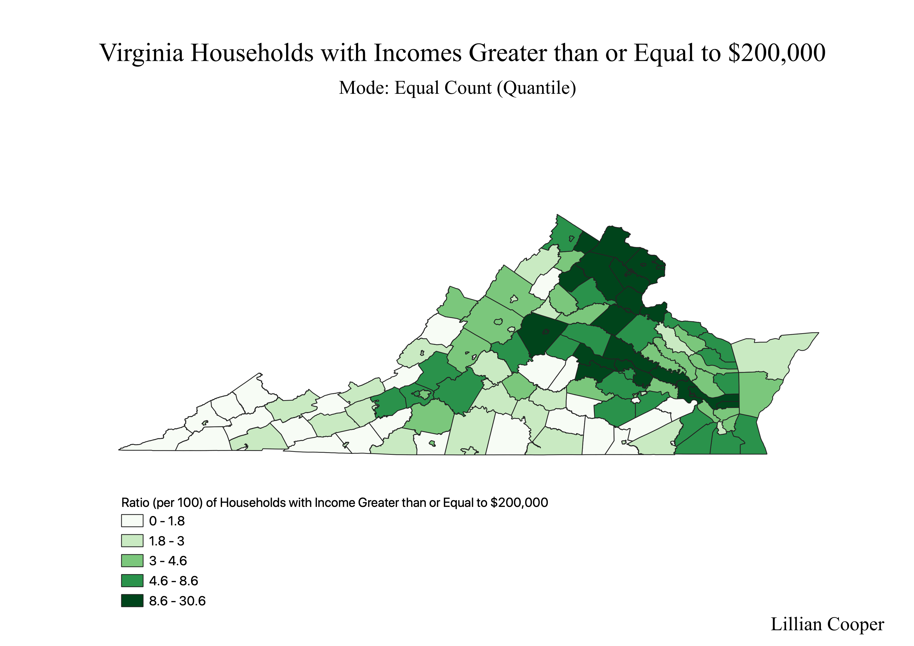
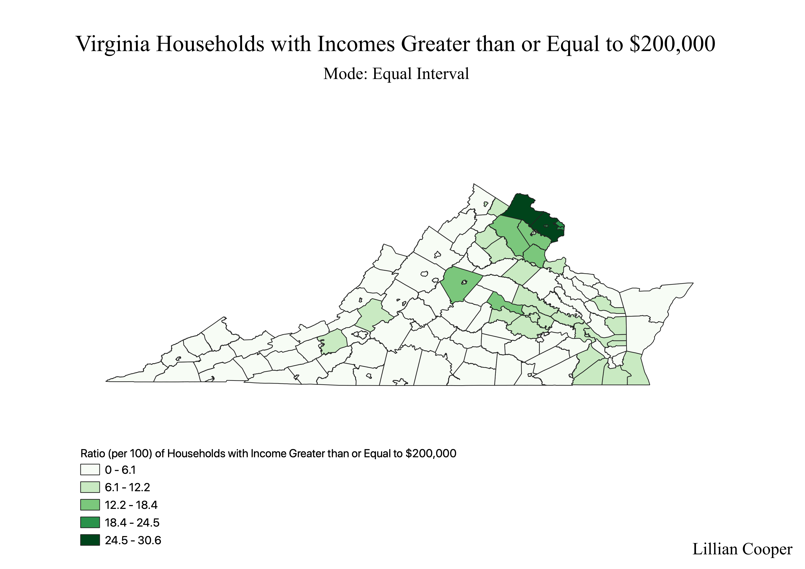
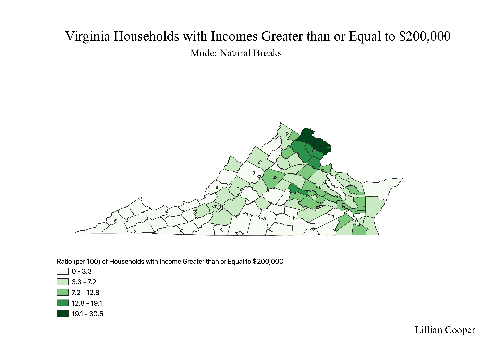

Homework 8: Census data ratios and categories
Lillian Cooper
The following three maps display county level differences between the ratio of households in Virginia with incomes exceeding $200,000. Each map differs in mode, but they express the same data in the same ratio. A ratio was used to display household income in each county because a raw display of the number of people in each county with a household income exceeding $200,000 does not account for differences in population between counties. Expressing the number of people as a percentage (ratio per 100 individuals) allows for more accurate comparison of household income between counties with different populations.
Mode I: Equal Count (Quantile)

The symbology for this map is graduated and uses the Equal Count (Quantile) mode. The advantage of graduation by equal count is that subtle differences are displayed. The disadvantage is that the breaks are not intuitive, which reduces comprehensibility for readers.
Mode II: Equal Interval

The symbology for this map is graduated and uses the Equal Interval mode. The advantage of graduation by equal interval is that the key is very comprehensible to viewers. The disadvantage of equal intervals is that subtle differences are not displayed in the graduation.
Mode III: Natural Breaks

The symbology for this map is graduated and uses the Natural Breaks mode. Graduation by natural breaks is disadvantageous in that the breaks are not intuitive, and only large differences are displayed (though this mode is more sensitive than the mode of equal intervals).